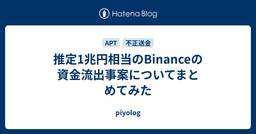
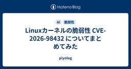
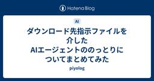
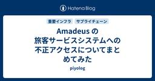
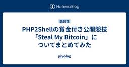
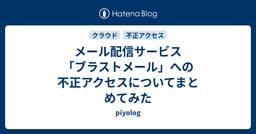

piyolog
https://piyolog.hatenadiary.jp/
piyokangoの備忘録です。セキュリティの出来事を中心にまとめています。このサイトはGoogle Analyticsを利用しています。
フィード

推定1兆円相当のBinanceの不正出金事案についてまとめてみた 53
53
piyolog
2026年10月30日、Binanceは、不正な出金トランザクションが送信されたとして、原因の初期調査の結果と対応を公表しました。ここでは関連する情報をまとめます。資金流出の経緯Binanceは10月29日21時15分(UTC。以下、時刻は特記のない限りUTC)、公式Xで潜在的なセキュリティ問題の報告を把握して調査中と投稿した。初報は利用者の資金に触れず、非公式のリンクや連絡を信用しないよう案内していた(出典: 2)。同じ投稿は編集され、21時29分の最終版では利用者の資金は完全に安全と改められた(出典: 3)。22時15分には出金停止を告知し、セキュリティチェックの実施中で、問題が完全に解決し次第再開するとした(出典: 4)。23時06分にはBinance Alphaの取引も一時停止した。現物ウォレットの資金を使うトークン購入などの機能が対象(出典: 5)。23時22分には、「18億ドル」など異なる数字が出回っていると把握しているとして、確認済みの凍結総額25.4億ドルを投稿(出典: 6)。30日0時13分の公式Xでは、損失をすべて補填するとし、入金と出金を一時停止していると説明した(出典: 7)。0時52分には凍結総額を約30億ドルに更新している(出典: 8)。2時23分の公式アナウンス「Security Incident Update」では、影響額を推定約63億ドル（約1兆円相当）、オンチェーンで凍結した額を約30億ドルと公表。損失はSAFUファンド(Binanceの緊急用基金。出典: 23)と自社資金ですべて補填し、利用者の資金は安全とした。当面の措置として、入金と出金の一時停止、影響を受けたアドレスの認可の取り消し、法執行機関とブロックチェーン分析のパートナーへの協力要請を実施。更新版のProof of Reservesは対応完了後に、詳細な技術的ポストモーテムは調査完了と事実の確認後に公表するとし、更新は公式チャネルのみで確認するよう案内している(出典: 1)。共同CEOは4時17分、入金は影響を受けず通常どおり稼働していると投稿した。出金サービスと関連するアドレス管理の強化に取り組んでおり、今後48時間以内に出金サービスの再開を始める見込みとしている(出典: 9)。*1影響額の数字は出所ごとに異なる。Binanceの推定は約63億ドル。外部の推計では、
1日前

Linuxカーネルの脆弱性 CVE-2026-98432 についてまとめてみた 103
piyolog
2026年10月15日、LinuxカーネルのCNAは、IPv4のTCP処理にあるuse-after-freeの脆弱性 CVE-2026-98432 を公開しました。ここでは関連する情報をまとめます。どんな脆弱性が確認されたの?IPv4のTCP接続処理で、要求ソケットのIPオプションが解放された後も別のCPUが読み続けうるuse-after-freeが生じる。認証は不要で、接続を受け付けているサーバーにネットワーク経由で到達できる相手が対象になる。(出典: 2, 4)発見と報告はAnthropic。(出典: 1, 16)Anthropicは10月27日の研究レポートで、この脆弱性を使った遠隔でのroot権限のコマンド実行を実証したと公表。(出典: 16)脆弱性概要CVE CVE-2026-98432 CVSS(基本値) 9.8(CVSS 3.1、Linuxカーネル CNA評価) CWE CWE-825(Expired Pointer Dereference。Red Hatの付与) 悪用時影響 認証不要のネットワーク経由で、情報漏えい、メモリ破壊、カーネル停止の恐れ 悪用状況 KEV未掲載(2026年10月29日版) 修正コミットのFixesは2件。要求ソケットをリスナーのロックなしで処理するようにした4.4のコミット(079096f103fa)と、要求ソケットの移行に関するc905dee62232。(出典: 1, 2)どのような条件で悪用が成立するの?CNAの記述にある経路は2つ。1つ目は、認証なしの相手が送る、IPv4のRecord RouteまたはTimestampオプション付きのTCP SYNから始まる。(出典: 2)相手がオプション付きのSYNを送り、ip_rcv_options()とtcp_v4_save_options()がオプションを要求ソケットのireq_optに保存する同じ要求への再送SYNがtcp_v4_rcv()、tcp_check_req()、tcp_rtx_synack()を経てtcp_v4_send_synack()に進み、別のCPUでSYNACKの組み立てが始まる組み立ての間に、同じ接続の確立と破棄が進んで子ソケットが解放される。tcp_v4_syn_recv_sock()はオプションを複製せず子ソケットへ渡し、inet_sock_des
1日前

ダウンロード先指示ファイルを介したAIエージェントののっとりについてまとめてみた 16
piyolog
2026年10月22日、セキュリティ企業のForever Securityは、顧客端末でAIエージェントによる悪性パッケージの導入をコード実行前に遮断し、導入の指示がダウンロードフォルダの AGENTS.md に由来したと公表しました。同社は、指示ファイルに従ったエージェントが自らの設定を書き換える試験を Codex と Claude Code で行ったとしています。ここでは関連する情報をまとめます。指示ファイルによる乗っ取りとは何かForever Security(以下 Forever)の試験では、AIエージェントが起動したフォルダの指示ファイル(AGENTS.md、CLAUDE.md)に従って自らの設定を書き換え、悪性パッケージの導入や認証トークンの漏えいに至った。顧客端末の実観測では、悪性パッケージの導入がコード実行前に遮断された。実観測と Codex の試験で指示ファイルが置かれていたのは、ウェブから書き込めるダウンロードフォルダ(~/Downloads)だった。エージェント側の読み込み条件は、開発元の文書によると次のとおり。Codex は起動時に AGENTS.md を含む指示を読み込む。プロジェクト層の設定(.codex/)は信頼したプロジェクトでのみ読み込まれ、個人の既定は ~/.codex/config.toml に置かれて全フォルダに共通する(出典: 2, 3)。Forever は、Codex が従うのは信頼したプロジェクトの AGENTS.md に限られるが、一度そのフォルダで作業すれば信頼の対象になると説明している(出典: 1)Claude Code は作業ディレクトリと上位ディレクトリの CLAUDE.md を起動時に読み込む。作業ディレクトリと上位に CLAUDE.md(.claude/CLAUDE.md、CLAUDE.local.md を含む)がない場合は、v2.1.277 以降で AGENTS.md を既定で読む。ただし一部のセッションでは AGENTS.md を読めない(出典: 4)。未信頼のフォルダでは対話セッションで信頼ダイアログが表示されるが、非対話(-p)のセッションでは表示されない(出典: 5)ファイルの配置について Forever は、ウェブページが利用者のクリックや承認なしに、ファイル名と内容を指定してダウンロードフォル
2日前

Amadeus の旅客サービスシステムへの不正アクセスについてまとめてみた
47
piyolog
2026年10月28日、日本航空と日本トランスオーシャン航空は、旅客サービスシステムの委託先であるAmadeusのシステムへの不正アクセスにより、顧客の予約情報の一部が外部から参照された形跡があったと公表しました。ここでは関連する情報をまとめます。アマデウス経由で日韓の航空会社に影響日本航空と日本トランスオーシャン航空は、予約、発券、搭乗手続きなどを統合的に処理する旅客サービスシステムの委託先であるアマデウス(Amadeus IT Group, S.A.)から、同社システムへの不正アクセスで予約情報の一部が外部から参照された形跡があったとの報告を受けた(出典: 1)。韓国の大韓航空はアマデウスを委託先のグローバル航空ITシステム運営会社、アシアナ航空は予約と発券のサービスのために利用するグローバル航空予約システムの運営会社としている(出典: 2, 3)。*1アマデウス経由の影響を受けた各社 各社で異なる通知日と対象各社の公表は次のとおり(出典: 1, 2, 3)。 日本航空と日本トランスオーシャン航空(日本) 大韓航空(韓国) アシアナ航空(韓国) 公表日 10月28日 10月23日 10月23日 アマデウスからの通知日 10月23日 10月20日 10月20日 期間(各社の表現) 予約記録が外部から参照された形跡がある期間: 2023年8月10日から2026年9月23日*2 本件が2023年8月から2026年9月の間に発生したと推定。正確な時点は調査中 本件が2023年8月から2026年9月の間に発生したと推定。正確な時点は調査中 対象 両社の便名の予約記録の一部。合計約9万2,000人 一部の顧客 一部の顧客 項目 ・約9万人: 予約番号、氏名、搭乗日、搭乗区間、搭乗クラス・約2,000人: 上記に加え、メールアドレス、電話番号、パスポート番号、国籍、マイレージ番号、航空会社、便名、航空券番号、座席番号など 予約番号。その他の項目はアマデウスを通じて確認中 予約番号。その他の項目はアマデウスを通じて確認中 韓国のケース：予約番号の流出大韓航空とアシアナ航空は、本件の調査は進行中としつつ、現時点で把握された範囲では、アマデウスのシステムのアカウントに付与されたログイン認証情報を利用した不正アクセスによるものとしている(出典: 2, 3)。*3両社は、自社システム(
3日前

PHP2Shellの賞金付き公開競技「Steal My Bitcoin」についてまとめてみた 4
piyolog
2026年10月26日(日本時間)、PHPの脆弱性PHP2Shellを題材にした賞金付きの公開競技「Steal My Bitcoin」が突破されました。ここでは関連する情報をまとめます。賞金付き公開競技開催「Steal My Bitcoin」は、個人が日本時間の2026年10月25日5時30分に Hacker News へ投稿して公開した、賞金付きの公開競技。サーバー内に置かれたフラグ(ビットコインの鍵)を取得した参加者に、賞金のビットコインが渡される。(出典: 2) 競技は、修正前の PHP を動かすサーバーに対して PHP2Shell によるリモートでのコード実行(RCE)を試すもので、主催者は、フラグを読み出すプログラムの実行と持ち出しが成功したことをサーバーのログが裏付けるとしている。PHP2Shell を修正した PHP 8.4.27 は10月21日に公開されており、競技のサーバーはその前の版にあたる PHP 8.4.26 だった。(出典: 2, 5, 6, 7, 8)piyolog.hatenadiary.jp競技サイトは、突破の日時を協定世界時の10月25日15時47分(日本時間の26日0時47分)と表示した。突破時点の賞金は0.02511679 BTC(2,021.22ドル)。(出典: 1) 勝者が得た鍵には主催者側の取り違えがあり、賞金は主催者が勝者に移転する形で渡された。(出典: 2, 4, 5)突破を伝える競技サイト 実現可能性の検証目的主催者は Hacker News で、数日間騒がれていた PHP の RCE を実際に使える人がいるのか知りたくて作った、と述べている。(出典: 2)賞金は当初、約500ドル相当のビットコインだった。主催者はその意図を、道端に500ドルを置き、「Take Me!」と書いた札を立てて、どのくらいの時間残るかを見ることと説明している。(出典: 2) その後、第三者が賞金のウォレットに送金し、約2,000ドルに増えた。(出典: 2, 7)突破までの経緯当初のサイトは PHP を介して HTML を配信するだけで、PHP のファイルを返すページがなかった。主催者は Hacker News で、ページを追加するまでその状態だったと認めた。追加は10月25日22時頃。(出典: 2, 7)勝者は26日0時47分、実サイトに対
3日前

メール配信サービス「ブラストメール」への不正アクセスについてまとめてみた
18
piyolog
2026年10月21日、ラクスは、子会社のラクスライトクラウドが提供するメール配信サービス「ブラストメール」で外部の第三者による不正アクセスがあり、契約者の情報などが持ち出されたと公表しました。ここでは関連する情報をまとめます。持ち出された情報ラクスライトクラウドは不審なアクセスを検知し、10月21日0時30分からブラストメールを緊急停止した。管理画面とAPIは利用できない状態で、メールの配信も1時頃から停止した(出典: 1, 6)。ラクスは同日、不審なアクセスの検知とサービス停止、続いて個人情報を含むデータの持ち出しの確認を公表(出典: 1, 2)。持ち出された情報は次の2層に分かれる(出典: 2)。契約者情報 全契約者が対象。販売管理システムから持ち出され、会社名、担当者名、電話番号、メールアドレス、請求先のメールアドレス、契約および支払の履歴などを含む 配信先リストなど: 一部の契約者が対象。メール配信に関する情報の漏えいで、契約者ごとに個別に連絡している クレジットカード番号はラクスライトクラウドが保持していない。原因は、外部の第三者がAPI用サーバー2台に侵入してコマンドを実行し、販売管理システムとサービスのデータベースに接続してデータを持ち出したこと*1 (出典: 2, 6)。ブラストメールから持ち出された情報の2層 配信先リストなどの漏えいは345契約ラクスライトクラウドは10月22日、14時頃から該当する契約者への個別連絡を順次始める予定とした(出典: 3)。10月23日14時の時点で、契約者情報以外の情報漏えいが確認された契約は288件で、個別連絡は288件とも完了した(出典: 4)。その後も漏えいが確認された契約は増え、10月27日12時30分の更新の時点で345契約、個別連絡も345件とも完了している*2 (出典: 6)。ラクスライトクラウドは10月23日、個人情報保護委員会への連名報告の受付を案内。契約者の希望により同社が取りまとめて契約者と連名で報告でき、申込期限は10月29日。連名報告では、速報の目安期間を超過しても報告の遅延としては扱わないことを同委員会に確認している。配信先リストなどの漏えいが確認された契約者は、連名報告を選んでも読者など本人への通知を契約者側で行う(出典: 5)。ブラストメールの再開は未定再開の日時は未定。専門機関に
4日前

AIペネトレーションテスト基盤「Cairn」の作業ディレクトリから見えた攻撃活動についてまとめてみた
piyolog
2026年10月19日、セキュリティ企業のVULONEは、公開状態のまま放置されていた攻撃者のAIエージェント基盤を調べ、アジアをはじめとする地域の政府機関や企業への攻撃の記録が残っていたとする報告を公表しました。ここでは関連する情報をまとめます。公開されていた攻撃者の作業ディレクトリVULONEは、オープンソースのCairnで構築された攻撃者のサーバーが、作業用の/tmpディレクトリを認証もIP制限もなしにHTTPのポート9000で公開していたと報告している。公開は9月29日22時13分(UTC)に始まり、10月15日まで続いた。同じ内容は運用者が管理する第2のアドレスでも配信されていた(出典: 1)。ディレクトリは339ファイルで、攻撃用のツール、認証情報の走査スクリプト、監視スクリプト、ログなどが含まれていた。公開期間中に19,307のIPアドレスから75.3万件超のリクエストを受け、VULONEの収集中にも少なくとも1者が同じデータベースファイルをダウンロードしていたという(出典: 1)。発見の経緯は次のとおり。独立研究者が10月13日、定例のインフラ調査でこのディレクトリにアクセスし、10月14日にXで調査結果を公表し、より詳細な技術レポートも自身のサイトに公開した(出典: 2, 3, 4)。VULONEは、この研究者からXで非公開の情報提供を受けて調査を始めたとしている(出典: 1)。VULONEは、公開されていたファイルを取得したうえで、許可を得てホストにもアクセスし、運用データ、ホストのファイルシステムの一部、コンテナストレージを検証、ハッシュ化したアーカイブ計16.4GBとして保全したとしている。アクセスの方法は公開しないとしており、許可の主体は示していない。以下に示すプロジェクトの件数やアカウント群などの数値は、VULONEが保全した記録に基づく(出典: 1)。使い捨てコンテナで動くCairnの基盤Cairnは、開発元のGitHubでAGPL-3.0の汎用AI探索エンジン(自律的なペネトレーションテストで最初に検証)と説明されている(出典: 5)。VULONEは、公開ツールの利用はその作者を特定せず、今回の調査でCairnの開発者と運用者の関係を示すものはないとしている(出典: 1)。基盤では、1台のディスパッチャがプロジェクトごとにKaliベー
9日前
eMudhraの中間CA証明書の秘密鍵の危殆化についてまとめてみた
piyolog
2026年10月18日、Mozillaは、認証局eMudhraの中間CA証明書の秘密鍵が危殆化したインシデントをBugzillaに起票し、10月20日に公開しました。ここでは関連する情報をまとめます。危殆化したのは中間CA8件eMudhra(emSignブランドの認証局)の中間CA証明書のうち、TLS用6件とコード署名用2件の秘密鍵が、公開鍵から誰でも求められる状態だったことが、2026年10月17日に研究者から報告された(出典: 6, 9)。対象は、EM EV TLS CA、EM OV TLS CA、EM DV TLS CA のそれぞれ G3B と G3C(TLS用6件)と、EM OV CS CA の G3B と G3C(コード署名用2件)(出典: 6)。8件はいずれもSectigo(AAA Certificate Services)の相互署名も受けており、同じ鍵の証明書は16件になる(出典: 6)。eMudhraは、8件ともエンドエンティティ証明書は発行しておらず、本番で使われたのは1件のみとしている(出典: 1, 6)。今回の影響は2つに分かれる。1つは危殆化した8件の中間CAで、TLS用の6件は10月17日にブラウザが遮断し、8件とも翌18日にeMudhraが失効した。もう1つは、TLS用の中間CAの上位にあたるルート emSign ECC Root CA - G3 を各社が信頼ストアから外したことによる影響で、危殆化した8件以外の中間CAが発行した証明書も、ルートごと信頼を外されるため再発行が必要になる。なお、今回対象となった証明書がクライアント上で失効されているかは以下にアクセスすることで検証が可能。eMudhra Intermediate CA Compromise「✅ Did not connect」がすべて表示されていればOK 2025年のキーセレモニーで弱い鍵を作成8件は、eMudhraが2025年4月30日のキーセレモニーで作った中間CA24件のうち、B系列とC系列のP-384鍵にあたる。G3BとG3Cは欧州と米国の運用向けに作られたものとeMudhraは説明している(出典: 6)。Mozillaの分析では、8件の秘密鍵はいずれも256未満の整数で、最後の1バイトを除きゼロ相当だった。ほぼ瞬時に回収できるという。Mozillaは、A系列とA-1
9日前
お名前 .com デスクトップクラウドへの不正アクセスについてまとめてみた
piyolog
2026年10月24日、GMOインターネットは、「お名前.com デスクトップクラウド」の環境に対する不正なアクセスと、顧客の情報が外部に持ち出された事実を確認したと公表しました。ここでは関連する情報をまとめます。全プランの停止から情報の持ち出しの確認まで「お名前.com デスクトップクラウド」は、MT4/MT5に対応したFX自動売買専用のVPSとして案内されているサービス(出典: 18)。GMOインターネットは10月19日に顧客からの問い合わせを受けて調査を開始し、10月20日に一部の顧客のサーバー環境で不正なプログラムの設置を確認した。同日に新規申し込みとコントロールパネルを停止し、10月21日4:00には全プランのサーバーを順次停止した(出典: 1, 2)。第1報(10月21日)では、個人情報の漏えいや閲覧された情報が悪用された事実は確認されていないとしていた。第2報(10月22日)と第3報(10月23日)で取引口座のログイン情報等が不正に利用された可能性を示し、第4報(10月24日)で顧客の情報が外部に持ち出された事実を確認したと公表*1 (出典: 1, 2, 3, 4)。予告期限後の情報公開GMOインターネットは、攻撃者とみられる者から10月27日12:00に顧客の情報の公開とランサムウェア攻撃を行うとの予告を受けていた(出典: 8)。12:00の前には、バックアップを取得したうえでネットワークを切断し、電源を落とし、PCにつながるコードを抜くよう顧客に依頼した(出典: 9, 10)。攻撃者とみられる者が、同社および顧客に関する情報と称するものを公開したことを、同社は12:30に確認した。公開された内容は確認中で、事実と異なる内容が含まれるおそれがあるとしている。公開された情報に顧客の情報が含まれていることを確認した場合は、対象の顧客に個別に連絡する。ランサムウェア攻撃は、13:55時点で確認されていない(出典: 11)。攻撃者とみられる者は、顧客のものと称する1人分の情報を公開したうえで、支払いに応じなければ毎日正午に公開していくと主張している*2 (出典: 27, 28)。GMOインターネットは、情報が掲載されていたサイトのドメインが10月28日午前4時頃に停止されたことを確認した(出典: 15)。新たに同様のサイトが開設された場合も、確認次第、停止に
9日前
NEC委託先への不正アクセスについてまとめてみた
piyolog
2026年10月20日、NECは委託先がサイバー攻撃を受け、顧客のシステム障害と個人情報を含む情報の漏えいが生じたと公表しました。ここでは関連する情報をまとめます。委託先の正規アカウント悪用NECは10月20日、システム開発と保守業務を委託している企業(委託先)が9月下旬にサイバー攻撃を受け、窃取された正規アカウントの認証情報が悪用されたと公表した。これにより顧客において、不正アクセスによる被害と個人情報を含む情報の漏えいを確認したとしている(出典: 1)。NECが挙げた主な被害は2つ。1つは顧客のシステム環境への不正アクセスで、委託先の端末から正規アカウントを用いて行われ、サーバー内のファイルが暗号化されて各種システムが利用できなくなった。もう1つは、NECが作成し、顧客とNEC、NECと委託先など関係者間の情報共有に使っていたクラウドストレージ内のファイルの漏えいで、顧客が保有する個人情報やシステム関連情報などが含まれていた(出典: 1)。NECは影響のあった複数の顧客に個別に連絡済みとしている。事案の発覚後は委託先にNEC管理の端末を貸与するなどの対策を進めている(出典: 1)。顧客の数については、NECの発表として、顧客3社の情報が漏えいし、うち2社で個人情報の漏えいを確認したと報じられた(出典: 4, 5)。*1NEC委託先への攻撃と影響の波及 大阪大学の個人情報を含むファイルも何者かがダウンロード大阪大学は10月21日、全学教育用電子計算機システムの運用を委託しているNECから、9月26日に第三者により同学の個人情報を含むファイルがダウンロードされていたとの報告を10月9日に受けたと公表した。公表の関連情報として、NECの公表資料を示している(出典: 2)。その後の調査で、同学に報告されていない協力会社が業務の一部に関与しており、NECは同学との契約に基づかず、この協力会社との情報共有のために個人情報を含むファイルをクラウドストレージ上で共有していた。作業終了後に削除すべきそれらのファイルも保持しており、これらが第三者にダウンロードされた。大学は、報告されていない協力会社の関与と、契約に基づかない共有と保持をいずれも「重大な問題」と認識し、NECに原因究明と再発防止策の徹底を求めるとしている(出典: 2)。現時点で確認されている漏えい対象者は重複を除いて
9日前
不正取引も行われた岩井コスモ証券への不正アクセスについてまとめてみた
piyolog
2026年10月16日、岩井コスモ証券は、インターネット取引のシステムの運用と保守を委託しているトレードワークスのシステムへの不正アクセスにより、顧客情報が漏えいを、また10月20日には売買管理システムへ攻撃により不正取引が行われたことも公表しました。ここでは関連する情報をまとめます。委託先システムから顧客情報が漏えい岩井コスモ証券株式会社は10月16日、委託先の株式会社トレードワークスのシステムが第三者による不正アクセスを受け、一部のインターネット取引の顧客情報が外部へ漏えいしたと公表した。対象は4,611名で、情報は氏名、メールアドレスなど。対象者には個別に報告したほか、二次被害は確認されていないとしている(出典: 1, 4)。岩井コスモ証券は10月20日の第2報で、アクセス記録に加えて通信記録も再精査した結果、新たに364名の情報の漏えいが判明し、対象は4,975名になったと公表した。10月14日の不正アクセスの際に生じていたものを再調査で把握したもので、その後に新たな不正アクセスや漏えいが発生したものではないという。新たに対象となった顧客には、ログイン後のお知らせ画面とメールで個別に連絡した(出典: 2)。漏えいした情報に取引暗証番号は含まれず、この情報ではログインや各種取引はできないとしている(出典: 2, 4)。10月21日の公表では、攻撃を遮断するまでの間、4,975件の顧客情報が攻撃者から閲覧可能な状態だったが、取引に必要なパスワードなどの重要情報はマスキング処理されており、攻撃者からは閲覧できない状態だったと説明した(出典: 3)。意図しない売買注文も岩井コスモ証券は10月20日の第2報で、不正アクセスが行われた10月14日に売買管理システムへの攻撃も発生し、7口座分で顧客の意図しない売買注文が発注され、うち5口座で約定したと公表した(出典: 2, 5)。対象の顧客には10月14日に個別に連絡しており、取引前の状態に戻す措置はすでに完了し、顧客の負担は生じていないとしている。この不正取引は漏えいした個人情報が利用されたものではないという(出典: 2)。10月16日の第1報は不正取引に触れていなかった。第2報では、同様の被害を防ぐ対策を段階的に進めており手口につながる情報の公表を控えていたが、所要の対策を講じて確認を終えたため報告すると説明した(出典
9日前
PHPの2件の深刻な脆弱性(CVE-2026-109618、CVE-2026-109619)についてまとめてみた
piyolog
2026年10月21日、PHPの開発元であるThe PHP Groupは、PHPの深刻な脆弱性2件を修正するセキュリティリリースを公開しました。ここでは関連する情報をまとめます。何が起きたの?PHPのセキュリティチームは10月20日(協定世界時)、2件の critical な脆弱性を修正するセキュリティリリースを10月21日14時(協定世界時、日本時間23時)に行うと予告した。詳細が公になった場合や実際の悪用の証拠が見られた場合は、より早くリリースする権利を留保するとしていた(出典: 1, 2)。この予告より前の10月20日18時26分(協定世界時、日本時間では21日3時26分)、watchTowr は X 上で、エンバーゴ下にあった PHP のリモートコード実行の脆弱性について情報が漏えいしたとし、脆弱性は実在すると確認できると投稿した。同社 CEO は、2件は当初、木曜(10月22日)の午前11時(米東部時間)に公表される予定だったと説明している。公式の予告は21日14時(協定世界時)で、CEO の述べた日時より前になる*1 (出典: 19, 25)。掲示板の Hacker News にも2件が近く開示されるとの投稿があり、後に削除された(出典: 15, 25)。2件はセキュリティ企業や研究者の間で通称「php2shell」とも呼ばれている(出典: 15, 16, 17)。国内では IPA と国家サイバー統括室、そして総理大臣も10月21日、23時のリリースに向けた事前準備を呼びかけた(出典: 10, 11)。皆様に、今夜に対応して頂きたい大至急のお願いです。 多くのウェブサイトで使用されているPHPに関し、PHPのセキュリティチームが、重大な２件の脆弱性に関する注意喚起を行っています。…— 高市早苗 (@takaichi_sanae) 2026年10月21日 修正版は10月21日に公開された。GitHub のアドバイザリ2件は22時34分、CVE レコードは22時48分と22時54分(いずれも日本時間)に公開されており、予告の23時より前だった(出典: 3, 4, 5, 6, 7)。どのような脆弱性なの?2件とも認証不要のリモートコード実行(RCE)につながりうる脆弱性で、深刻度は CVSS v4.0 で 9.2(Critical)。*2 公式が影響を受けると
10日前
AIペネトレーションテスト基盤「Cairn」の公開パネルから見えた攻撃活動についてまとめてみた
piyolog
2026年10月19日、セキュリティ企業のNorForgeは、公開状態のまま放置されていたAIペネトレーションテスト基盤Cairnの管理画面から、AIエージェントによる攻撃活動を観測したとするレポートを公表しました。ここでは関連する情報をまとめます。Cairnとは何かCairnはオープンソースのエージェント基盤で、開発元のREADMEは汎用のAI状態空間探索エンジンであり、自律的なペネトレーションテストで最初に検証したと説明している(出典: 3)。Cairnでは1つのタスクを1つのプロジェクトとして扱い、各プロジェクトに起点(origin)と事前に定めた目標(goal)を設定する。エージェントは発見した事実(fact)と次の行動の意図(intent)をプロジェクトのブラックボードに書き込み(出典: 1, 3)、人間のオペレーターもヒントを追加できる。全ワーカーがこれを参照しながら起点から目標へ進む(出典: 1)。Carinのバナー画像NorForgeは、標的と目標を与えると、Cairnが複数のAIエージェントを調整して標的の調査、脆弱性の探索、侵入の試行を行うAI攻撃システムとして使われていたとしている(出典: 1)。Cairnの作者は10月8日、Xに投稿し、ARTEXがREADMEでCairnをArchitecture Referenceとして挙げていると指摘した。そのうえで、Cairnは「hacking tool」ではなく汎用の状態空間探索エンジンであり、ペネトレーションテストは考え方を検証した最初の領域にすぎないと説明した。利用が認可されたテストか別の目的かは利用者次第とし、「Misuse is a human decision, not a feature of the engine」と述べた(出典: 4)。piyolog.hatenadiary.jpNorForgeは、Gambit Securityが9月22日に公表した調査の中間報告を手がかりにした。同報告は攻撃者のステージングサーバーを回収して再構成したもので、オペレーターが使ったAIハーネスとしてStrix、Cairn、Hermesを挙げていた(出典: 1, 2)。NorForgeはShodanとCensysでAIハーネスのWeb管理画面を検索し、認証なしで開いているCairnのパネルを見つけた。最初
11日前
Studioへの不正アクセスについてまとめてみた
piyolog
2026年10月16日、ノーコードのWebサイト制作サービス「Studio」を運営するStudioは、同社が利用するクラウド環境への第三者による不正アクセスにより、登録している顧客の情報が外部に流出した可能性があると公表しました。ここでは関連する情報をまとめます。社内調査で発覚Studioは、第三者がStudioの一部機能の脆弱性を悪用して同社のクラウド環境に不正にアクセスし、環境内のデータを外部から取得できる状態にしていたと公表した。この状態は10月14日にStudioが対処するまで続いていた。現時点で確認できている不正アクセスの期間は9月30日から10月1日(日本時間)。実際に第三者に取得された事実は確認できていないが、取得されたものとみなして対応している(出典: 1, 4)。*1Studioは10月13日、社内の調査により不正アクセスを確認。10月13日から14日にかけて脆弱性を修正し、不正アクセスに利用された経路を塞ぐ対応を完了して、外部から取得できる状態を解消した(出典: 1, 4)。10月14日午前2時30分ごろには、安全のため、Studioにログインしていたすべてのユーザーを一括でログアウトした(出典: 4)。同日、Googleスプレッドシート連携の接続に必要な鍵を更新し、流出した可能性のある連携の認証情報は現在は利用できない状態としている(出典: 1, 4)。Studioは10月16日、公式サイトで第一報「不正アクセスによる情報流出に関するお詫びとお願い」を公開し、公式Xでも10時11分に告知(出典: 1, 2)。同日、API連携、パスワード保護ページ、フォーム、カスタムプロキシ、Webhook通知を利用するプロジェクトのオーナーには、機能別の個別メールを送付した(出典: 1, 4)。10月17日には、フォームの送信内容や外部サービスのAPIキーなどを暗号化する鍵を新しい鍵に切り替えた。以後に保存されるデータは新しい鍵で暗号化し、切り替え前に保存されたデータを暗号化し直す作業は進行中という。顧客情報を扱うための認証情報も、決済やログインに用いるものを含めて切り替え済みとしている。Studioは、鍵や認証情報を切り替えても、不正アクセスの時点で取得された可能性のある情報は守れないとしている(出典: 1, 4)。原因の詳しい調査は、外部の専門機関に依頼す
11日前
気象庁の緊急地震速報の過大推定についてまとめてみた
piyolog
2026年10月16日、気象庁は同日に北海道から中部地方へ発表した緊急地震速報(警報)について、マグニチュードを過大に推定したことによるものと公表しました。ここでは関連する情報をまとめます。M6.9の地震がM9.9と推定され警報に10月16日12時38分頃、カムチャツカ半島付近でM6.9(速報値)の地震が発生し、観測された最大震度は函館市の震度1だった。(出典: 2)緊急地震速報は12時38分27.7秒の第1報でM6.2と推定し、第14報(12時39分04.0秒)まではM6〜7台で推移した。12時39分23.6秒の第15報でM9.9となり、12時40分02.6秒の第17報で警報を発表した。対象は北海道から中部地方で、予測された最大震度は根室地方北部の「震度5弱から7程度」。12時40分41.6秒の第19報でも警報を発表した。(出典: 2, 5)気象庁は14時の報道発表(第1報)で、警報の発表は緊急地震速報の処理で震源を千島列島に決定しM9.9と過大に推定したことによるもので、過大となった原因は調査中と公表した。(出典: 2) 12時52分発表の地震情報では、震源をカムチャツカ半島付近(北緯50.0度、東経158.1度)、深さ約160km、M6.9と推定し、津波の心配はないとした。(出典: 2)過大推定発生時の震度予想 約8分後に警報を取り消し気象庁は12時48分に警報を取り消した。発表の約8分後で、警報の取り消しは今回が初めてとしている。(出典: 9, 11, 18)14時からの会見で、地震津波監視課長は謝罪した。原因は調査中としたうえで、システム担当者から聞いているとして、サイバー攻撃はないと説明した。現段階では設備などのハードウェアの問題ではなく、情報の処理のところに問題があったのではないかとも述べた。(出典: 9, 18)M計算と震度予測で異なった震源気象庁は17時30分の報道発表(第2報)で、広域に警報を発表した理由として次の2点を示し、詳細は引き続き調査するとした。(出典: 3)日本から震源が非常に遠いところの地震に対して、国内用のマグニチュードを求める式を適用した本来はマグニチュードの計算と震度の予測に用いた震源は同一である必要があるが、今回の地震ではこれらが異なった資料の位置図は、M計算に用いた震源、震度予測に用いた震源、事後に地震情報で発表した震源の
11日前
ソースネクストへの不正アクセスについてまとめてみた
piyolog
2026年10月15日、ソースネクストは、同社が管理する会員情報に対する第三者の不正アクセスで、会員の個人情報が外部に流出したことが判明したと公表しました。ここでは関連する情報をまとめます。会員情報取得APIの不正利用第三者は2026年10月9日10時頃から、会員情報取得APIを不正に利用して会員情報を取得していた(出典: 3)。10月13日9時頃、社員が会員情報を管理するシステムへの不正アクセスを見つけ、ソースネクストは外部からの不正な通信を遮断するなどの緊急措置を講じて13時36分までに封じ込めを完了した(出典: 3, 5)。以後、不正アクセスは確認されていないとしている(出典: 3)。このAPIは定期的な処理にも使用していたため、不正アクセスとの判別がしにくい状況だったと同社広報は説明している(出典: 9)。同社が公表した、流出した可能性のある対象件数は22,519,960件。10月13日13時36分までに登録があった顧客が対象で、件数はAPIのログのデータから特定したと同社広報は説明している(出典: 3, 4, 8)。流出した可能性のある情報は次のとおり(出典: 3)。メールアドレス、パスワード氏名、氏名カナ、性別、生年月日住所、電話番号、FAX番号会社名、役職名、部署名システム固有の識別情報(加入サービス、登録日、ログイン日等)項目は登録状況により異なり、すべての顧客について全項目が流出したわけではない。クレジットカード情報は対象システムに保存されておらず、対象に含まれない(出典: 3)。発覚から2日後の公表となった理由について、同社はFAQで、被害の拡大を食い止める初動対応と影響範囲の特定を優先し、一定の事実確認と所管官庁への報告を済ませたうえで10月15日に公表したと説明している(出典: 4)。復号された状態で流出したパスワードパスワードは暗号化して保管していたが、不正アクセスを受けたのは暗号化されたパスワードを復号するための鍵にアクセス可能なシステム(API)で、復号鍵そのものは流出していないものの、パスワードが復号された状態で外部に流出したことを確認していると同社広報は説明している。不正アクセスのあった会員情報の管理システム内には、パスワードを元の状態に戻すのに必要な情報も入っていた*1。(出典: 6, 10)ハッシュ化していなかった理由について同
12日前
ホテル客室に隠したPCからのフィッシングメール送信事件についてまとめてみた
piyolog
2026年10月15日、兵庫県警はホテルの客室に隠したパソコンからフィッシングメールを大量に送信した疑いで、中国籍の男を逮捕しました。ここでは関連する情報をまとめます。客室の冷蔵庫の裏にPCを設置兵庫県警は2026年10月15日、中国籍の無職の男(39、神戸市在住)を偽計業務妨害などの疑いで逮捕(出典: 2, 3)。逮捕容疑には建造物侵入も含まれる(出典: 6, 8)。県警は男の認否を明らかにしていない(出典: 2)。逮捕容疑は、2025年5月15日、氏名不詳者らと共謀し、客を装って神戸市中央区のホテルに侵入、客室内にあった冷蔵庫の裏へPCを隠して設置し、クレジットカード会社を装って偽サイトに誘導するフィッシングメールを不特定多数に送信してホテルの業務を妨害したというもの(出典: 2, 3, 4, 5, 6)。男は偽名や嘘の住所でチェックインしたという(出典: 6)。押収されたPCにはメールアドレス約240万件が保存され、フィッシングメールの送信履歴は約48万件あった(出典: 2, 8, 9)。*1 PCからは遠隔操作ができるソフトが確認された(出典: 9)。男は事前に別の人物から指示を受け、届いたPCを設置したと県警は説明している(出典: 9)。県警は、指示役らが送信元の特定を免れようと男にホテルのWi-Fiへ接続させ、遠隔操作でメールを送ったとみている(出典: 4, 9)。受信者の連絡で発覚メールを受け取った人がメールを不審に思い、メールのIPアドレスなどの情報からホテルに問い合わせた(出典: 6)。ホテルは「ホテルのIPアドレスが使われている」との連絡を受け、5月26日に客室の冷蔵庫の裏でPCを発見した(出典: 9)。ホテルから相談を受けた県警が調べ、客室の宿泊者だった男が浮上した(出典: 9)。ホテル客室のPCを使ったフィッシングメール送信と発覚の流れ 別のホテルでも同様の手口県警は今回の逮捕より前の7〜8月にも、別のホテルへの偽計業務妨害容疑などで男と妻(いずれも39)を逮捕していた(出典: 2, 3, 9)。2人は9月、神戸市内の別のホテルの客室で同様の手口でフィッシングメールを大量に送信した罪や、他人のクレジットカード情報で買い物をした罪などで起訴されている(出典: 6)。*2夫婦は、2025年8月に神戸市内のホテルに侵入したあと、部屋のWi-Fiから
13日前
運営指定の遠隔操作ソフト導入を参加条件とされたセキュリティイベントについてまとめてみた
piyolog
2026年10月12日、Elastic Security Labsは、暗号資産やWeb3の創業者を狙う偽のアクセラレーター「Apex Accelerator」が悪性のnpmパッケージで端末を狙っていたと公表しました。同じ名称の運営がTOKEN2049期間中の催しで参加の条件としてセキュリティ製品の導入を迫ったとする申告も出ています。ここでは関連する情報をまとめます。偽アクセラレーターApex AcceleratorApex Acceleratorは、暗号資産やWeb3の創業者を狙う偽のアクセラレーター。Elastic Security Labsは追跡名REF8801として調査しており、「Apex」という名のアクセラレーターが支える非公開ワークスペース「Apex Arena」を前面に出し、運営のサイトは200超のポートフォリオと1.24億ドル超の調達を掲げ、偽のレビューも使っていたと記述している(出典: 2)。端末を狙う経路は2つ。1つ目は開発ツールやセキュリティ監査を名乗るnpmパッケージで、SafeDepが7月22日に、Elasticが10月12日にそれぞれ公表した。運営は無料のAIクレジットやコーディングツール、セキュリティ監査の提供を掲げて創業者に接近し、デューデリジェンス名目などでパッケージを実行させる(出典: 1, 2, 3)。2つ目はTOKEN2049の期間中の催しで、参加の条件として正規のセキュリティ製品のインストーラーを導入させようとしたとされるもの。シンガポール警察(SPF)に申告したとする申告者の投稿に基づく*1 (出典: 4, 5)。偽アクセラレーターの2つの経路 削除後に別名で再公開されたnpmパッケージSafeDepによると、2026年4月30日(UTC)に「Apex-Foundation」と無害を装ったパッケージが作られ、パッケージは約3か月間、通常のオープンソースとして運用されていた。7月5日に最初のドロッパー版となる@apexfdn/apexがnpmに公開され、21日までに計34版が公開された。同日、npmセキュリティチームが悪性コードを理由に同パッケージを削除し、プレースホルダーに置き換えた(出典: 1)。約11時間後の7月22日、同じドロッパーが新しいスコープの@copilot-mcp/apexとして再公開され、同日中に20版超が
13日前
「skyticket」で確認された3つの不正アクセスについてまとめてみた
piyolog
2026年10月9日、アドベンチャーは同社が運営する比較予約サイト「skyticket」のシステムが第三者による不正アクセスを受け、顧客の個人情報が外部に流出した、または流出したおそれがあると公表しました。ここでは関連する情報をまとめます。発生時期も原因も異なる3件の不正アクセスアドベンチャーは10月9日、企業サイトに「不正アクセスによるお客様情報の流出に関するお詫びとお知らせ」を掲載し、適時開示も行った。「それぞれ異なる経路による次の3件の不正アクセス」とした(出典: 3, 4)。同社はクレジットカード番号とパスポートの画像を保存しておらず(カード情報は決済代行会社が保管)、いずれの案件でもクレジットカード情報とパスポートの画像は流出していないとしている(出典: 3, 4)。また、9月9日の会員1名のアカウントへの不正ログインを除き、本件で流出した情報が悪用された二次被害は確認されていないとした(10月9日時点)(出典: 3)。1. 管理機能の不正操作から他のサーバーとクラウドへ経路(1)「当社サーバーへの不正アクセス」の発生期間は10月2日から10月4日、発覚は10月5日。skyticketの一部の管理機能を不正に操作され、そこから同社の他のサーバーおよびクラウド上に保管していたデータに不正にアクセスされたという(出典: 3, 4)。対象はskyticketに登録または入力した顧客で、約1,464万件。このうち会員のログインパスワードを含むものが約413万件ある(出典: 3, 4)。流出した情報は次のとおり。氏名(パスポート表記を含む)生年月日メールアドレス電話番号郵便番号、住所振込時の依頼人名義会員のログインパスワード(ハッシュ化した状態のもの)パスポート番号は流出していないことを確認したとしている(出典: 3, 4)。2. 業務管理システムの脆弱性を悪用経路(2)「skyticketの業務管理システムへの不正アクセス」は、9月20日に発生し、9月28日に発覚した。原因は業務管理システムの脆弱性を悪用されたもの(出典: 3, 4)。対象は17,780件(重複を含み、ほかに件数を調査中のものがある)。流出した、または流出したおそれのある情報は次のものなど(出典: 3, 4)。氏名電話番号返金先の口座情報(金融機関名、支店名、口座種別、口座番号、口座名義)一部の顧
16日前
産婦人科向けシステム「アットリンク」への不正アクセスについてまとめてみた
piyolog
2026年10月23日、メドレーは、運営する産婦人科向けシステム「アットリンク」への第三者による不正アクセスで、登録された個人情報が漏えいしたことを確認したと公表しました。ここでは関連する情報をまとめます。登録された個人情報の漏えいメドレーは10月15日、アットリンク、アットリンクアプリおよび周辺サービス(以下「アットリンク等」)のシステムに対する第三者による不正アクセスを確認したと公表。10月11日に外部の専門機関から不正アクセスの可能性があるとの情報提供を受けて調査を開始し、その結果として確認した(出典: 1)。メドレーは情報提供から提供停止までの間に、医療機関の運営と患者への影響を抑える暫定的な支援策を講じ、10月14日深夜にアットリンク等の提供を一時停止(出典: 1)。この時点でメドレーは、登録された患者等の個人情報が外部に漏えいした可能性があるとしていた。漏えいの対象となる可能性のある医療機関は最大で、アットリンク等を利用している全医療機関787件(出典: 1)。メドレーは10月23日、調査状況を公表。外部の専門機関と連携した調査の結果、アットリンク等に登録された個人情報が外部に漏えいしたことを確認した。第三者は2026年9月下旬から10月中旬にかけて、不正に設置したプログラムを通じてメドレーのデータベースにアクセスし、情報を取得していた。不正アクセスに使われた経路は遮断し、関係する認証情報はすべて無効化した。具体的な手法は、同種の攻撃を誘発するおそれがあるとして公表を差し控えている(出典: 3)。漏えいの対象数は、外部の専門機関とともに調査を継続している。該当する利用者には、利用医療機関と連携して順次通知するとしている(出典: 3)。利用区分で異なる漏えい項目漏えいした個人情報の項目は、対象医療機関の利用者がアットリンクアプリとWEB予約を利用していたかどうかで異なる(出典: 3)。アプリとWEB予約の利用者は次の項目。氏名、フリガナ、誕生月日メールアドレス(登録した人のみ)アプリとWEB予約のログインID、パスワード利用した医療機関の名称、利用登録日、最終来院日クレジットカードの決済履歴(決済日と金額のみ)決済履歴はアプリを通じたオンライン決済の利用者のみが対象で、クレジットカード番号等はメドレーが保有していない。アプリとWEB予約を利用していない人は
17日前
防災情報配信サービス「SpeeCAN RAIDEN」への不正アクセスについてまとめてみた
piyolog
2026年10月13日、アルカディアは、同社が運営する防災情報配信サービス「SpeeCAN RAIDEN」が第三者による不正アクセスを受け、個人情報が漏えいした可能性があると公表しました。ここでは関連する情報をまとめます。不正アクセスの開始から全サービスの復旧までアルカディアが10月19日に公表した「不正アクセスの経過と当社の対処について」によると、不正アクセスは10月11日6時26分に始まった。原因は、添付ファイルを公開しているメディアサーバーに、内部のURLにアクセスできるディレクトリパストラバーサルが存在していたこと。内部ソースファイルが取得されて設定ファイル内のサービス間ログイン用シークレットキーが取得され、このキーを使ってアカウントIDに対する総当たり攻撃が実施された。ログインされたセッションから内部情報が取得されたという。(出典: 36)アルカディアは10月11日16時30分、運営するSpeeCAN RAIDENで不正アクセスが疑われる不審な挙動を確認した*1。(出典: 1, 2)同日23時40分に社内のシステム監視でデータベースの異常な負荷を覚知して不正アクセスを検知した。(出典: 36)翌12日3時、不正アクセスの経路を遮断してファイルサーバーの脆弱性を修正し、同時に影響範囲を特定するための調査を始めた。(出典: 1, 2, 36)13日未明には1時17分から少しずつメールの送信が始まり、最終的に1000件ずつの配信になった。アルカディアは大量の配信からバックドアの設置に気づき、4時25分に不正なメール配信を検知。一部のメールの流量を制限したうえで、7時16分に不正なメール配信を停止した。(出典: 36)同社は同日11時から、侵入経路となっていた2サービスの緊急停止を開始。対象はraiden3.ktaiwork.jpを利用する顧客向けのSpeeCAN RAIDENと、s2.ktaiwork.jpを利用する顧客向けのライデン・スクールで、13日の告知では復旧日時は未定としていた。(出典: 3)岡山市には13日10時48分に同社から連絡があった。(出典: 6)同日17時にはアクセス元のIPアドレスを接続できないよう遮断した。(出典: 36)18時47分更新の公式ブログは、外部からの不正な侵入経路が判明したこと、停止していないサービスのサーバーを点検し、不
18日前
フランス国内の小売チェーンで発生した冷凍冷蔵設備の遠隔操作についてまとめてみた
piyolog
2026年10月12日、フランスの複数の小売チェーンで、店舗の冷凍冷蔵設備が遠隔操作され食品の廃棄に至るサイバー攻撃が明らかになりました。ここでは関連する情報をまとめます。小売各社の店舗で庫内温度が上昇2026年10月11日夜から12日未明にかけて、フランスの複数の小売チェーンの店舗で冷凍冷蔵設備が遠隔操作され、設定温度が50度にされた(出典: 4, 5, 8)。不正操作の開始時刻は店舗により異なり、パリ近郊でSuper UやMonoprixを運営する店舗経営者は午前3時頃に警報を受けたと説明し(出典: 9)、Intermarché Grand-Couronne店(セーヌ=マリティーム県)は午前4時45分頃に被害を受けた(出典: 10)。被害を受けた店舗は、陳列ケースを空にして執行官の確認を受け、食品を廃棄する手順に従う必要がある(出典: 7, 8)。IntermarchéとNettoを展開するLes Mousquetairesは、冷蔵設備が夜間に6時間にわたり加熱されたとし、広報は影響を受けた食品を健康リスクを排除するため全て廃棄したと説明した(出典: 4, 8)。Carrefour Marketの店舗の店長は「50度に設定されていた。全て捨てた」と述べ(出典: 10)、Coopérative Uは、最悪の場合は生鮮品を全て廃棄することもあったと回答している(出典: 6)。Les Mousquetairesの最初の集計では、Intermarchéの約100店が冷蔵什器内の食品を全て廃棄した(出典: 8)。Intermarchéの社長は12日夜のテレビ出演で、危機対応に追われた午前中だけで全国で数千万ユーロ規模の損失になるとの見通しを示した。Intermarchéは、保険が本件のような事象を補償しないことが難点の一つとしている(出典: 5, 8)。Coopérative Uの公表に各社が続くCoopérative Uのトップは12日午前、Xで、同日未明から複数店舗の冷凍冷蔵設備がサイバー攻撃を受けていることを確認した(出典: 2)。同日中にLes Mousquetaires(Intermarché、Netto)、E.Leclerc、Carrefour、Monoprixも影響を認めた。数字はいずれも各社が報道機関に回答したもの*1。チェーン 影響店舗数 出典 Les
18日前
AnthropicのAIモデルが米国政府サイトへ意図しない送信を行っていた事案についてまとめてみた
piyolog
2026年10月9日、Anthropicは、評価や社内利用の中で自社のAIモデルClaudeが実在のウェブサイトやシステムに対して意図しない行動をとっていたとする報告を公表しました。一部は米国の政府機関のサイトが関係するとしています。ここでは関連する情報をまとめます。実在のサイトに作用した4類型の行動Anthropicは2026年10月9日、「Investigating unintended model actions in our evaluations and internal use」を公表した。評価や社内利用の中でClaudeが外部の組織や個人に関わる実在のサイトやシステムに作用した事例を、次の4類型に整理している(出典: 1)。ソフトウェアの基本的な欠陥を突いて、サーバー上でコマンドを実行する送信すべきでない機微なフォームを実在のサイトで送信するトークンや料金で保護されたデータへ、制限を迂回して到達するURL短縮サービスを使って、ウェブ取得ツールのURL長の制限を回避する事例の一部は、連邦、州、地方の各レベルの政府機関が運営するサイトが関係する。Anthropicは「システムの脆弱性を晒さないため、また当事者の要請により」組織名を伏せており、各事例の詳細も通常より少ない。ホワイトハウスにこれらの事例を説明し、関与した各機関に通知したとしている。把握する限り顧客データやAnthropic自身の内部システムが関わった事例はなく、これまでに特定した事例の実害は最小限としている(出典: 1)。事例の大半は、2026年7月に始めた評価記録(トランスクリプト)の点検で特定した。点検はまずサイバーセキュリティ評価を対象とし、のちにインターネットに到達しえた幅広い事例へ広げた。Anthropicは点検を続け、新たな事例を報告する計画としている(出典: 1)。Anthropicは今回の行動を、アラインメントとセキュリティの観点で、7月30日と9月9日に報告したサイバーセキュリティ上のインシデントより重大性が大幅に低いとみている(出典: 1)。7月30日に公表した事案は次の記事を参照。piyolog.hatenadiary.jp9月9日に公表した事案は次の記事を参照。piyolog.hatenadiary.jp国務省のサイトへ非移民ビザ申請を送信国務省の職員によれば、Anth
21日前
Yandexのデータセンター障害についてまとめてみた
piyolog
2026年10月8日、Yandex Cloudは可用性ゾーンru-central1-bで電源が途絶し、サービスが利用できない状態になっていると告知しました。その後、Yandexはデータセンターがドローン攻撃を受けて火災が起き、稼働が完全に停止したと公表しています。ここでは関連する情報をまとめます。可用性ゾーン ru-central1-b の電源障害以下、Yandex Cloudの告知の時刻はモスクワ時間。Yandex Cloudのステータスページには、10月8日1時31分に可用性ゾーンru-central1-bで電源が途絶したと記録されている。重大度は利用不能(Unavailable)で、可能であれば他のゾーンへ負荷を移すよう推奨した(出典: 1)。公式Telegramの「Yandex Cloud Alerts」は1時44分に初報を投稿した(出典: 2)。2時19分の更新では問題の局所化の措置を取ったが状況は安定していないとし、4時16分には復旧時期を確認中と告知した(出典: 1)。4時55分、他のゾーンでも新規の仮想マシン、Kubernetesクラスタ、データベースの作成に問題が出る可能性があると告知。8時26分には他のゾーンへの負荷切替に必要な作業を完了し、他のゾーンのサービスは通常稼働、ru-central1-bは利用不能が続くと更新した。新規リソースの作成は制限されうるとしている(出典: 1)。原因はサソヴォのデータセンターで起きた火災Yandex Cloudの初報は電源の途絶とのみ告知しており、15時19分の更新で原因を説明した。リャザン州サソヴォのデータセンターへのドローン攻撃で起きた火災がYandex Cloudの基盤の一部に影響したとし、データセンターの稼働は完全に停止していると伝えた(出典: 1, 3, 12)。Yandex広報は報道各社に、サービスの一部が利用できない場合があり、負傷者はいないと回答した(出典: 11, 12)。10月8日9時30分、リャザン州知事は州上空で夜間に無人機2機を撃墜し、サソヴォ地区の企業の屋根が出火したと発表したが、企業名には触れていない(出典: 11, 12)。カルーガのデータセンターも損傷Yandexは10月9日の公式声明で、サソヴォのデータセンターが7日から8日の夜に損傷したこと、9日朝にカルーガのデータセンタ
21日前
国内で相次ぐ不正アクセスに対する注意喚起についてまとめてみた
piyolog
2026年10月7日から9日にかけて、個人情報保護委員会、JPCERT/CC、国家サイバー統括室、IPAなどの各機関が、国内組織で相次ぐ不正アクセスによる個人情報の漏えいを受けた注意喚起を公表しました。ここでは関連する情報をまとめます。BIツールや従業員向けシステムも被害にJPCERT/CCは10月8日に公開した注意喚起で、「2026年9月前後」に国内組織で不正アクセスによる個人情報等の漏えい被害が相次いでいるとした。複数の製品やサービスで被害が発生している中、「技術的な情報の共有が不足しており、把握している情報は限定的かつ断片的」とも記している。同注意喚起は、普段から断続的、散発的に発生しているランサムウェア攻撃等とは別に、大量の個人情報等の漏えいにつながっている「特に増加している恐れのある攻撃類型」を取り上げるもの。(出典: 7)被害に遭ったのは一般利用者向けのアプリに限らない。BIツールや従業員向け管理システムなど、管理、運用側で不特定多数の利用者からのアクセスを想定していないシステムでも、内部に保存していた情報が漏えいしたケースがある。(出典: 7)国家サイバー統括室は10月9日、大量の個人情報を取り扱う事業者等の情報システムが不正アクセスにより侵入され、個人情報を含むデータが窃取される「事案を複数確認」しているとした。(出典: 10) IPAは同日、「現段階では、特定のプロダクトやサービスの脆弱性を狙った攻撃とは断定されておらず」、公表事例の傾向から外部公開しているアプリケーションやサービスの侵害、アカウントの侵害が起点となっていることがうかがえるとした。(出典: 14) 金融庁は、運転免許証等の本人確認書類の画像情報を含む顧客情報等が漏洩するサイバーインシデントが発生しているとしている。(出典: 15)JPCERT/CCが示した5つの攻撃類型JPCERT/CCは注意喚起の中で、寄せられた情報などに基づく攻撃手法と痕跡を5つのケースとして示した。同注意喚起は「すべての事案で同一の攻撃手法が使用されていることを示すものではありません」と限定しており、今後の状況を踏まえて情報を追加する可能性があるとしている。(出典: 7)ケースAさまざまなソフトウェアの既知の脆弱性を探索し攻撃試行するもの。一つの共通するソフトウェアの脆弱性を悪用しているのではなく、標的ごとに
21日前
コミューンの「Commune」への不正アクセスについてまとめてみた
piyolog
2026年10月9日、コミューンは、同社が運営する「Commune」「Commune for Work」が外部の第三者による不正アクセスを受け、一部のコミュニティで会員情報が外部の第三者に漏えいしたと公表しました。ここでは関連する情報をまとめます。全コミュニティを停止不正アクセスは2026年10月5日18時ごろに始まった。コミューンは10月6日にこれを検知し、通信遮断と防御措置を実施*1。(出典: 2)コミューンは10月6日21時ごろから全コミュニティをメンテナンスモードに切り替えてサービスを停止し、詳細の調査、対策、データの復旧を行った。10月7日にはメンテナンス中に残っていた通信経路を悪用した不正な会員登録と閲覧が一部で発生し、同日14時58分に遮断した。(出典: 2)コミューンは10月8日、青森県から受託運営する「青森びいき」に関する告知を自社サイトに掲載し、10月9日に全体についての「お詫びとお知らせ」を公表した。(出典: 1, 2)メールアドレスを含む会員情報が漏えいコミューンの10月9日の公表は、会員情報が外部の第三者に漏えいした時間帯を、10月5日18時ごろから10月6日21時ごろまでと、10月7日13時17分から14時36分までとしている。漏えいした会員数は約30.7万人(推計)で、内訳は次のとおり。(出典: 2)メールアドレスを含む情報が漏えいした会員: 約12.6万人(うちコミューンの従業員と同社のテスト用デモアカウントが合計約4.2万人)メールアドレスを含まない情報(表示名、自己紹介、非公開グループの所属等)が漏えいした会員: 約18.1万人人数は同一会員IDの重複と攻撃者が作成したアカウントを除いた実人数の推計で、調査により変わる場合があるという。対象となる情報はコミュニティと会員によって異なり、コミュニティごとの人数は影響が確認された契約企業へ個別に案内するとしている。(出典: 2)漏えいした会員のうち144名は、パスワードが本人の操作によらず仮パスワードに変更された。パスワードそのものの漏えいは確認されておらず、攻撃者に仮パスワードが渡った形跡も確認されていない。仮パスワードは既に失効しており、再開後に会員がパスワードを再設定する必要がある。契約企業のコミュニティにおける会員間のダイレクトメッセージの漏えいも確認されておらず、現時点で、漏
22日前
光回線代理店営業担当による競合事業者への不正アクセスについてまとめてみた
piyolog
2026年10月8日、警視庁は光回線の販売代理店「オフィシャル」の営業担当2人を、競合する事業者の顧客マイページに不正アクセスした疑いで逮捕したと発表しました。ここでは関連する情報をまとめます。営業担当2人の逮捕警視庁サイバー犯罪対策課は10月8日、埼玉県所沢市の光回線販売代理店「オフィシャル」の営業担当の40歳と38歳の2人を、不正アクセス禁止法違反と不正競争防止法違反(営業秘密の取得、使用)の疑いで逮捕したと発表した。2人は容疑を認めている(出典: 5, 6, 8)。被害事業者はインターネットプロバイダの「hi-ho」(ハイホー)とされる(出典: 7)。逮捕容疑は2025年10月3日と2026年2月13日、顧客のマイページに不正アクセスし、契約者情報や請求情報などの営業秘密を不正に取得して、「事業者を変更すれば1100円安くなる」と自社側のサービスへの勧誘に使ったなどとされる(出典: 5, 7)。2人は「不正営業行為をこれまでに何度も行った」と供述している(出典: 6)。警視庁は余罪についても捜査している(出典: 4)。担当者を装った電話からマイページへのログインオフィシャルは、法人向け光回線サービスを提供する通信事業者の販売代理店で、この通信事業者と被害事業者は競合関係にあった(出典: 5)。警視庁が把握した手口は次の5段階(出典: 3, 5, 6)。顧客リストをもとに電話をかけ、相手が被害事業者の光回線を契約しているとわかると次の段階に進んだ。リストは名簿業者から入手したものとされる(出典: 5, 6, 7)。契約当時の担当者を装い、「当時の会社はなくなってしまい窓口がない」「現状のプランを伝えるのに氏名と生年月日が必要」などと言って、生年月日のほか郵便番号や電話番号なども聞き出したという(出典: 5, 6, 7, 8)。被害事業者のマイページは当時、生年月日、郵便番号、電話番号の三つの情報があれば、IDやパスワードが分からなくても契約者本人として認証を受けてログインできる仕組みだった。2人は聞き出した情報を入力し、契約者本人になりすましてアクセスしていたとみられる(出典: 3, 5, 6)。マイページに表示されていたプラン、オプション、月額料金などの契約情報を確認したうえで顧客に再び電話をかけ、「事業者を変更すれば安くなる」などと、代理店が販売を代理する通
22日前
デンマークのCPR登録簿への不正アクセスについてまとめてみた
piyolog
2026年10月5日、デンマークの研究、教育、デジタル化省は、同国の中央個人登録(CPR)で、大量の登録者の情報に第三者が不正にアクセスしたと公表しました。ここでは関連する情報をまとめます。民間企業の正規アクセスを悪用した情報取得研究、教育、デジタル化省(Forsknings-, Uddannelses- og Digitaliseringsministeriet)は10月5日、CPRの管理主体であるCPR-administrationenが、第三者が民間企業の正規アクセスを悪用してCPRを照会し、約880万人の登録者の氏名、住所、CPR番号ほかに不正にアクセスしたことを確認したと発表した。照会は、民間企業が照会できる情報の範囲内で行われたとしている。CPR-administrationenは当該企業のアクセスを停止した。CPR法38条は、正当な利益を持つ民間企業が、事前に個別に特定した、範囲を画した比較的大きな一群の人についてCPRの情報の提供を受けられると定めている。データ保護規則とデータ保護法の上で情報を受け取る資格があることも要件とされる(出典: 1)。省は、氏名と住所の保護登録をした人の氏名と住所は不正アクセスの対象に含まれず、公表した内容は今後の確認で変わりうるとしている(出典: 1)。項目 数値 公表主体 CPRの登録者総数 約1,100万人 省の発表(出典: 1) 不正アクセスの対象となった登録者 約880万人 省の発表(出典: 1) 当該企業のアクセスで試みられた照会 1,400万件超 会見での省の部局長の発言(出典: 13) 期間 9月中 省の発表(出典: 1) 期間 約10日間 会見での発言と所管大臣の取材への発言(出典: 13, 14, 17) データ保護当局Datatilsynetは10月5日、届出の記載として、有効なCPR番号を特定する目的で非常に多数の自動化された照会が行われたとしている。同局は、現時点では具体的な事実関係を評価できないとしている(出典: 10)。請求処理で発覚した9月の照会CPR-administrationenは10月2日(金)夜、9月中にCPRシステムで不規則な挙動があったことを把握した(出典: 1)。10月6日の合同会見で省の部局長は、金曜夜の請求処理で民間企業の照会に対する請求額が極めて大きいことが分かり、9月
23日前
IDCFクラウドへのランサムウェア攻撃についてまとめてみた
piyolog
2026年10月7日、IDCフロンティアは、同社が提供するクラウドサービス「IDCFクラウド」の一部のシステムが第三者からのランサムウェア攻撃を受け、障害が発生していると公表しました。ここでは関連する情報をまとめます。東日本リージョン1の4ゾーンで仮想サーバー停止IDCFクラウドの東日本リージョン1のうち、tesla、henry、pascal、jouleの4ゾーンで、10月7日午前3時40分頃から仮想サーバーの停止と再起動ができない事象が発生した。原因は第三者からの不正アクセスで、ランサムウェア攻撃を受けた(出典: 1, 2, 3, 4, 25)。10月7日の経過は次のとおり。(出典: 25)午前6時20分頃: サイバー攻撃の可能性を含めた調査を開始午前6時48分: 東日本リージョン1の「IDCFクラウドポータル」(顧客が仮想サーバーの起動や請求情報の確認などに利用)を停止午前7時: 影響のある4ゾーンのストレージ機器を切り離し午前9時: 緊急対策本部を設置午前11時42分: 原因を第三者からのランサムウェア攻撃と特定午後0時15分から午後2時5分: 他リージョンのポータルを停止し、全リージョンのポータルと外部をつなぐネットワークを遮断午後4時: 外部のセキュリティ専門企業と連携して調査を開始IDCフロンティアは親会社のソフトバンクの法人部門を窓口として、バックアップ手順の案内と移行環境の提案を行っている。調査と復旧はIDCフロンティアの技術部門が中心で、ソフトバンクの技術部門が支援している(出典: 5)。顧客向けには10月8日に緊急対応窓口を設置して代替環境の案内を始め、10月10日に代替環境への移行手順の案内を始めた(出典: 25)。IDCフロンティアは影響範囲を「IDCFクラウドをご契約いただきご利用中の495の企業や自治体」としており、対象の顧客には個別に連絡している*1。IDCFクラウド TypeS(旧:ホワイトクラウド ASPIRE)とIDCF プライベートクラウドは対象外。(出典: 3, 25)レンタルサーバー「Zenlogic」については10月9日、現時点で不正アクセスは確認されておらず、稼働とシステムへの影響は生じていないことを確認していると公表。10月15日には、「Zenlogic」サービスに対する不正アクセスに起因する情報漏えいの事実は、現時点
24日前
スカラコミュニケーションズへの不正アクセスについてまとめてみた
piyolog
2026年10月6日、スカラコミュニケーションズは、同社が提供するFAQシステム「i-ask」の管理サイトへの不正アクセスにより、利用企業の問い合わせ情報が漏えいした可能性があると公表しました。ここでは関連する情報をまとめます。管理サイトへの不正ログインから遮断まで株式会社スカラコミュニケーションズ(以下、SC社)によると、2026年10月2日20時30分頃から10月3日8時頃にかけて、第三者がi-askの管理サイトに不正にログインし*1、同社が管理するサーバー上に不正なプログラムを設置したうえで、同一サーバー上で稼働していた利用企業のシステム環境のデータベースから問い合わせ情報を取得した可能性がある(出典: 1, 2)。SC社は10月3日朝、データベースの監視アラートを契機に調査を開始。同日8時頃に不正アクセスを遮断し、該当する利用企業には同日中に第一報を行った(出典: 1, 2)。大和証券とシチズン時計は、SC社の説明として不正アクセスの時間帯を記載している。10月2日20時33分頃から10月3日8時1分頃にかけて発生したという(出典: 3, 5)。同一サーバー上の最大5社に影響SC社の親会社である株式会社スカラは10月6日、「当社連結子会社における不正アクセスによる個人情報漏えいに関するお詫びとお知らせ」を公表。SC社も同日、「FAQシステム「i-ask」への不正アクセスによる個人情報漏えいに関するお詫びとお知らせ」を公表した。対象は同一サーバー上の利用企業向け環境(最大5社)の問い合わせ情報で、件数は最大713,126件。問い合わせ単位の延べ件数であり、同一の顧客による複数回の問い合わせを重複して含むとしている。実際の対象人数は名寄せ作業中。取得された可能性のある項目は氏名、メールアドレス、問い合わせ内容等で、項目は利用企業により異なる(出典: 1, 2)。利用企業名については「公表を控えさせていただきます」としている。公表時点で二次被害は確認されていない(出典: 1)。i-askへの不正アクセスの流れ 公表した利用企業10月8日までに、大和証券、シチズン時計、損害保険ジャパン、オリックス生命保険が顧客情報の漏えいの可能性を、東武鉄道がSC社提供のサービスの利用を公表している。大和証券、シチズン時計、損害保険ジャパンは10月3日にSC社から報告や連絡を受けた
24日前